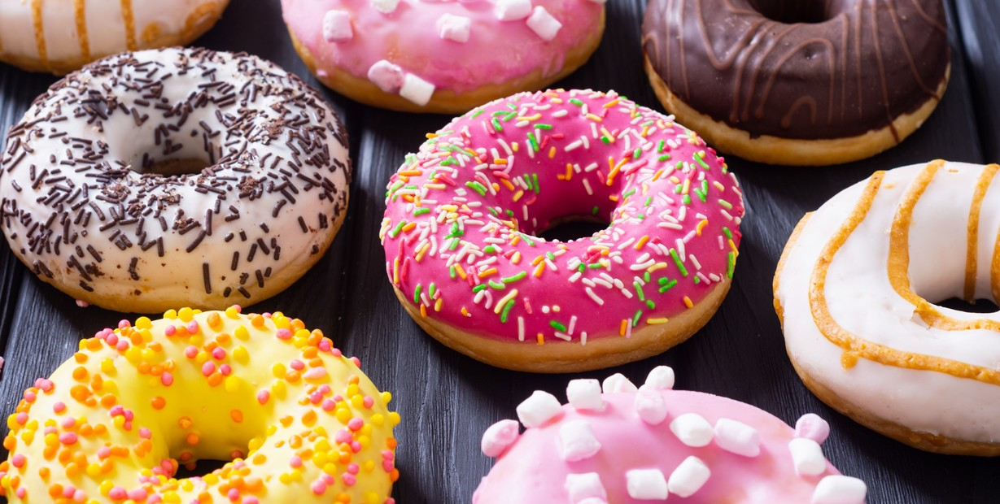
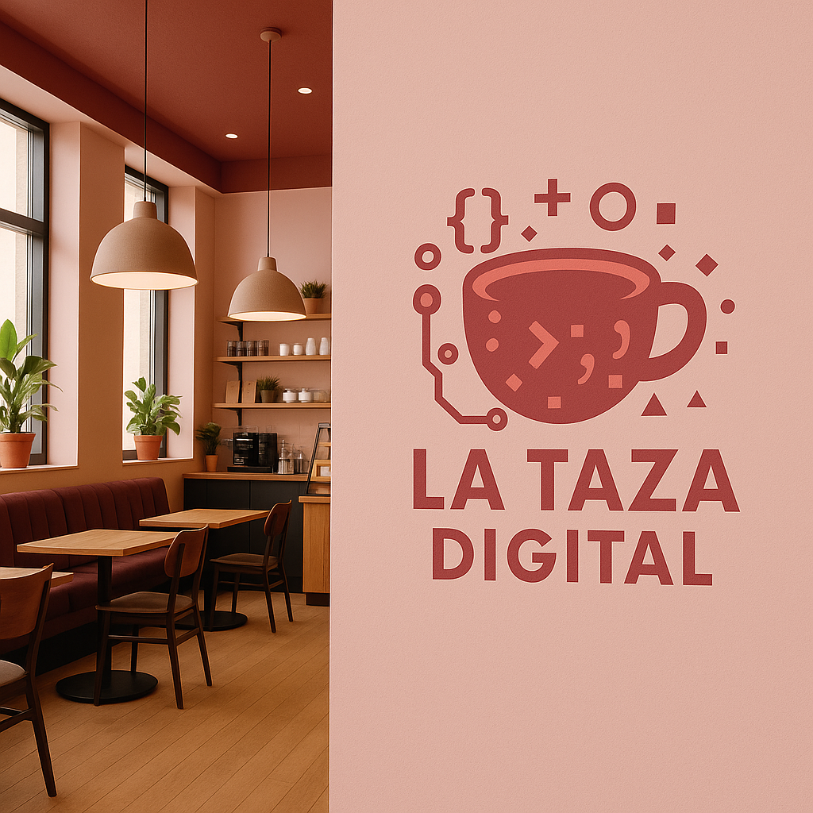

Nuestros comienzos
Después de meses de planificación, recetas caseras y muchas ideas compartidas en servilletas, el primer local de La Taza Digital abrió sus puertas en abril de 2019. El ambiente, decorado con madera, plantas y luces suaves, invitaba a quedarse. Pronto, el aroma del espresso recién hecho y la sonrisa con la que se atendía a cada cliente hicieron que el lugar se ganara un espacio en el corazón del barrio.



Hoy
Hoy somos mucho más que una cafetería. Somos un punto de encuentro para amigos, parejas, estudiantes y soñadores. Cada bebida que servimos y cada detalle del espacio reflejan nuestra esencia: calidez, sabor y cercanía. Y seguimos adelante, creciendo taza a taza, momento a momento.
